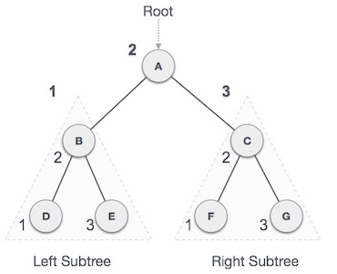

Traversal is a process to visit all the nodes of a tree and may print their values too. Because, all nodes are connected via edges (links) we always start from the root (head) node. That is, we cannot random access a node in tree. There are three ways which we use to traverse a tree −
Generally we traverse a tree to search or locate given item or key in the tree or to print all the values it contains.
In this traversal method, the left left-subtree is visited first, then root and then the right sub-tree. We should always remember that every node may represent a subtree itself.
If a binary tree is traversed inorder, the output will produce sorted key values in ascending order.
We start from A, and following in-order traversal, we move to its left subtree B. B is also traversed in-ordered. And the process goes on until all the nodes are visited. The output of in-order traversal of this tree will be −
D → B → E → A → F → C → G
Until all nodes are traversed − Step 1 − Recursively traverse left subtree. Step 2 − Visit root node. Step 3 − Recursively traverse right subtree.
In this traversal method, the root node is visited first, then left subtree and finally right sub-tree.

We start from A, and following pre-order traversal, we first visit A itself and then move to its left subtree B. B is also traversed pre-ordered. And the process goes on until all the nodes are visited. The output of pre-order traversal of this tree will be −
A → B → D → E → C → F → G
Until all nodes are traversed − Step 1 − Visit root node. Step 2 − Recursively traverse left subtree. Step 3 − Recursively traverse right subtree.
In this traversal method, the root node is visited last, hence the name. First we traverse left subtree, then right subtree and finally root.

We start from A, and following pre-order traversal, we first visit left subtree B. B is also traversed post-ordered. And the process goes on until all the nodes are visited. The output of post-order traversal of this tree will be −
D → E → B → F → G → C → A
Until all nodes are traversed − Step 1 − Recursively traverse left subtree. Step 2 − Recursively traverse right subtree. Step 3 − Visit root node.
To check the C implementation of tree traversing, please click here.